Purpose
This catalog defines the user scenarios for the JFT Skills Development Platform (JFT SDP) MVP release. It is scoped to the four MVP scenarios that constitute the complete functional scope of the first production deployment.
The MVP objective is to deploy the existing v1 proof-of-concept codebase (Cicada) to a production-quality, scalable infrastructure with a polished UI, accessible outside the WGU intranet via LTI 1.3 single sign-on. No new features, adaptive logic changes, or coaching algorithm modifications are in scope for this release.
Each of the four scenarios is self-contained. Each represents a distinct student profile interacting with the Coding Coach for the first time (SC-MVP-01, 02, 03) or returning after a break (SC-MVP-04). Every scenario begins from the LMS course page and includes its own complete LTI launch, diagnostic or re-assessment, and coaching flow.
13 Learning Objective Sub-Sections
The coaching structure for this release is defined by these 13 sub-sections, inherited from the v1 Cicada codebase:
First Launch of the Coding Coach
Context
Sally is an enrolled WGU student working through E010: Foundations of Programming (Python). The JFT SDP coding coach is available to her as a supplemental practice tool via a resource link in the course she can click at any time. It does not replace any formative opportunity or high-stakes course assessment. A stable LTI 1.3 resource link has been placed in E010 by the D&D team using LRPS. Sally has no prior Python knowledge. She clicks the Coding Coach link for the first time.
Trigger
Sally clicks the "Coding Coach — Python" resource link in E010. The LTI 1.3 link launch completes, WGU SSO confirms her identity silently (no separate login prompt), and the coaching platform opens in a new browser tab.
Sally is reading her zyBooks course page for E010: Foundations of Programming (Python). The page displays the course overview, competencies (Identifies Python Programming Constructs, Executes Python Code, Manipulates Data Structures, Creates Functional Programs), prerequisites, and instructor assistance information. A “Coding Coach” button is positioned next to the Competencies section. Sally clicks the Coding Coach button.
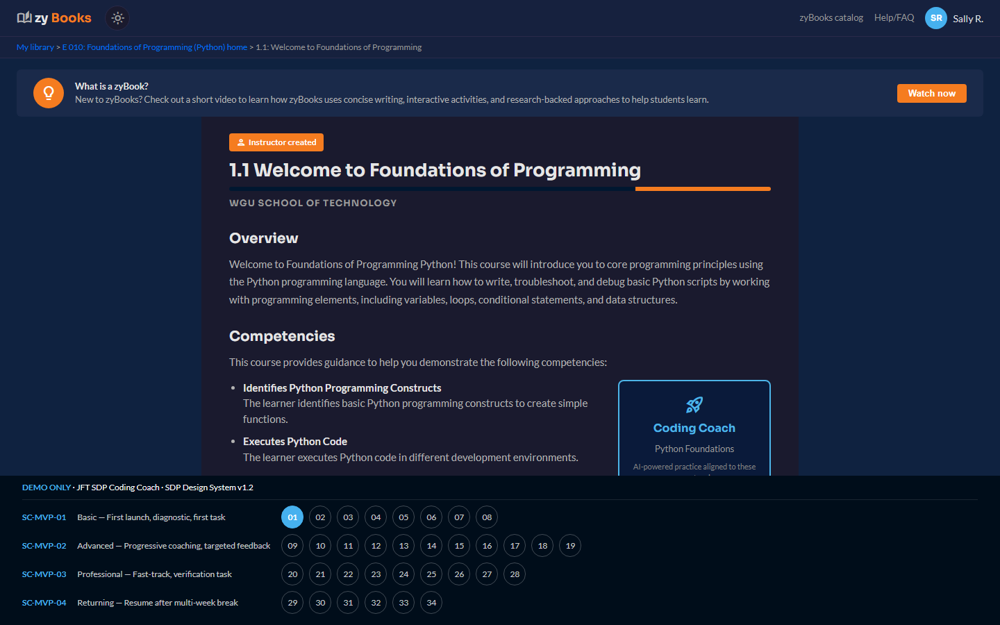
The Coding Coach opens in a new browser tab. The entry screen displays a badge (“Supplemental Practice Tool”), the heading “Coding Coach — Python Foundations”, and a plain-language description: “This tool finds where you actually are in Python — not where a fixed syllabus assumes you are — and builds practice tasks around your specific gaps.” A “Begin Diagnostic” button is the primary CTA with a note “(Takes about 5–8 minutes).” Trust signals appear below: “Secured via WGU SSO,” “WCAG 2.2 AA,” “Works on any device.” The right side lists all 13 practice areas. A footer note reads: “The diagnostic samples across all 13 areas. You’ll only practice what you don’t already know.” No tutorial is required.
The platform presents a short diagnostic — LLM-generated questions sampling across all 13 sub-sections. The first screen shows Question 3 of 10, sub-section "Basic Syntax & Data Types," with a progress bar at 30%. The AI-generated prompt asks Sally to define and use variables in Python. A dark-themed code editor provides space for her response. A "Need a Hint?" link and "Submit Answer" button are available. The "Need a Hint?" link reveals scaffolding without giving away the answer; submitted code is evaluated by the AI coaching engine using the same text-based evaluation logic that drives targeted feedback later in the session (see SC-MVP-02 step 8).
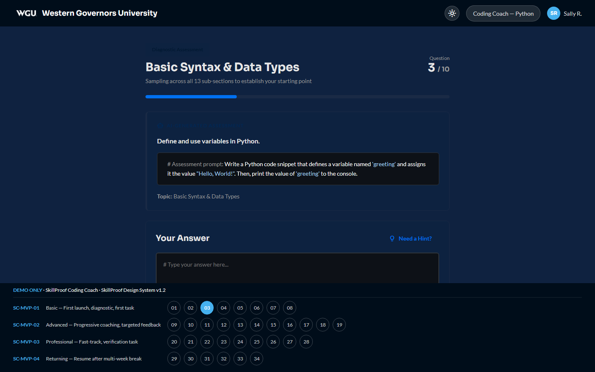
Question 7 of 10, sub-section "Control Flow & Logic" at 70%. The prompt asks Sally to write a Python function called check_grade that takes a numeric score and returns "Pass" or "Fail." Questions are calibrated for a student with zero prior Python experience.
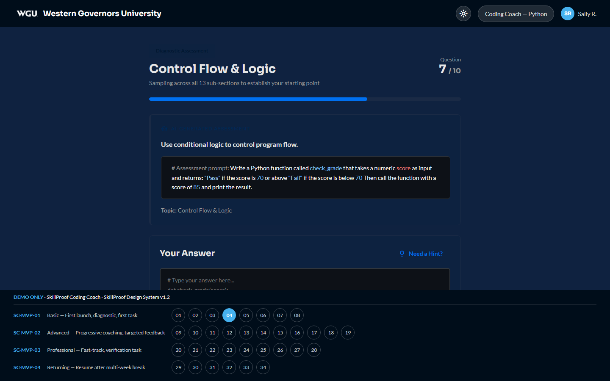
Sally completes the diagnostic. The results screen displays "We've established your starting point." Her results show no measurable prior knowledge across any sub-section. The baseline is stored against Sally's WGU student ID via LTI 1.3. All 13 sub-sections are listed as chips. A "View Your Progress Map" CTA leads to the next screen.
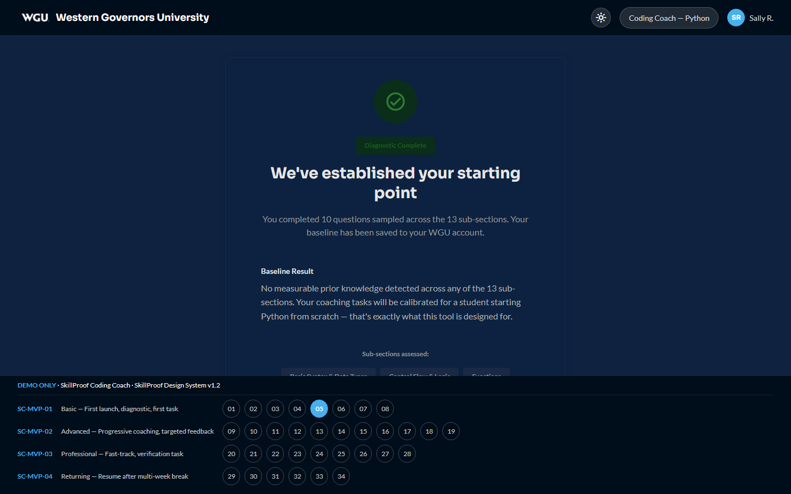
The progress map shows "13 sub-sections · 0 mastered · 13 to explore." All show "Not Started." Basic Syntax & Data Types is highlighted as the "Recommended starting point." Sally can "Start Coaching" or "Return to Course Textbook."
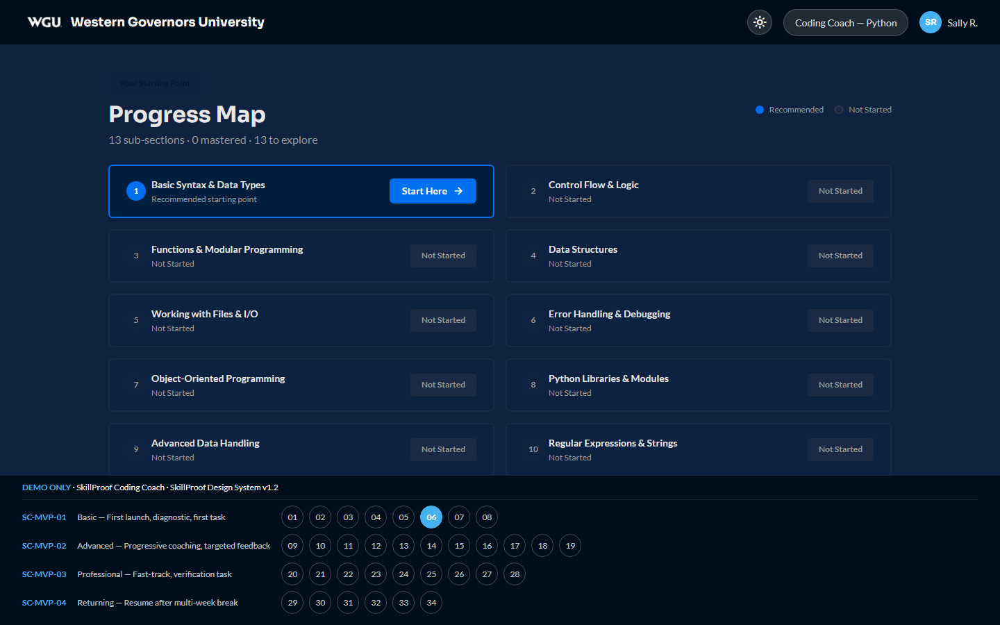
Sally is routed to "Variables & Assignment" in Basic Syntax & Data Types. The AI coaching prompt introduces variables and asks Sally to create a student_name variable. A tip box provides guidance. The response area includes a code editor, "Submit Answer," "Need a Hint?" link, and "Save & Exit" ghost button.
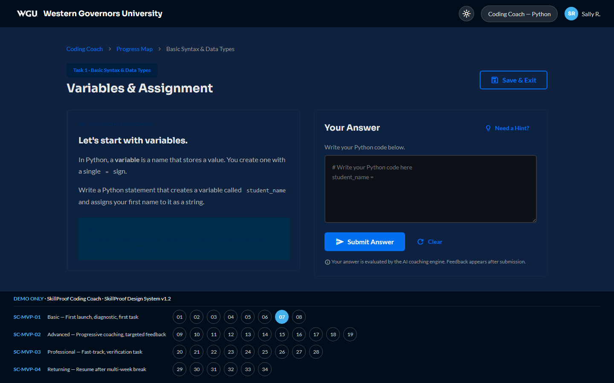
Sally closes the tool. The confirmation card shows: sub-section (Basic Syntax & Data Types), tasks completed (1), sub-sections unlocked (1 of 13), session duration (14 min), resume point (Variables & Assignment — Task 2). “Return to E010 Course” and “View Progress Map” links are available. A footer note reads: “This tool does not affect your course grade or academic record.” If Sally exits mid-task rather than at a natural task boundary, the platform resumes her at the last completed task boundary on her next launch — not at the mid-task exit point. Mid-task state within an incomplete question is not preserved.
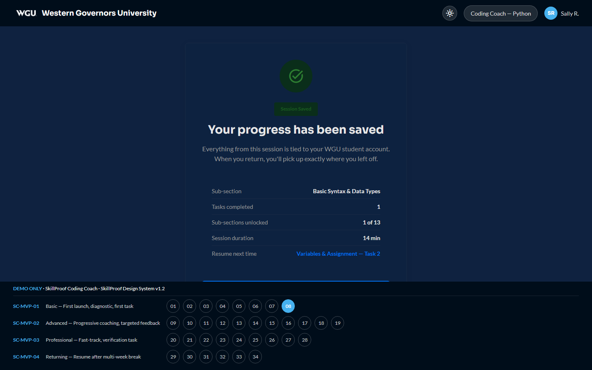
Expected Outcome
- LTI 1.3 basic launch completes without a separate login prompt.
- The diagnostic samples across all 13 SDP sub-sections.
- A coaching baseline is stored against Sally's WGU student ID via LTI 1.3.
- Sally is routed to an appropriate first coaching task based on diagnostic results.
- Session progress is saved on exit. On re-launch, Sally resumes at the last completed task boundary.
- All screens meet WCAG 2.2 AA and are navigable by keyboard and screen reader.
Notes for JFT
- The coding coach does not generate grades, feed grade passback to the LMS, or appear in any student academic record. WGU is using basic LTI 1.3. There is no LTI Advantage.
- The D&D team places and manages resource links in the LMS using WGU’s Learning Resource Provisioning System (LRPS). LRPS can generate authenticated LTI-standard links to any vendor-owned resource, or act as a passthrough for any public URL. When a student clicks an LRPS link from a course content page, the system handles SSO transparently (students are typically already signed in) and redirects to the target resource. The LTI 1.3 technical integration between LRPS and the JFT SDP platform is handled by WGU’s tools integration team. JFT does not own LMS-side link placement. The platform must expose a stable launch URL that does not change when a course’s content or module structure is reorganized.
- Diagnostic question generation relies on LLM-inherent variation to prevent identical question sets across students. JFT must document the generation strategy in the technical design. Additional signals — such as time-to-response and first-attempt accuracy — may be used by the existing Cicada v1 logic to inform the competency model; JFT must document how the v1 codebase handles these signals.
- FERPA requirements apply to all stored student interaction data from the moment of first launch. Minimum data stored in the MVP: WGU student ID (from LTI), sub-section progress indicators, and session timestamps. The MVP stores competency-level progress data (e.g., which sub-sections a student has passed and at what difficulty level), not individual interaction state (e.g., the full text of LLM-generated questions or student responses). JFT must document the data storage approach and confirm FERPA compliance before production deployment. The LRPS integration and its role in the LTI launch flow were reviewed with JFT by the WGU LRPS team on 06 Apr 2026.
- The storyboard shows the zyBooks course page (Screen 1) as a design reference for contextualizing the LTI launch. This screen is not part of the Coding Coach application — it illustrates the student’s starting point in the zyBooks textbook.
Progressive Coaching with Targeted Feedback
Context
Sally is an enrolled WGU student working through E010: Foundations of Programming (Python). She has partial Python knowledge — she understands basic syntax but has gaps in data structures and more advanced topics. She accesses the Coding Coach for the first time. This scenario demonstrates progressive coaching with targeted feedback when a student answers incorrectly, including gap verification and difficulty advancement.
Trigger
Sally clicks the "Coding Coach — Python" resource link in E010. The LTI 1.3 launch completes, WGU SSO confirms her identity silently, and the coaching platform opens in a new browser tab.
Sally is reading her zyBooks course page for E010. The page displays the course overview and competencies. A “Coding Coach” button is positioned next to the Competencies section. Sally clicks the Coding Coach button.
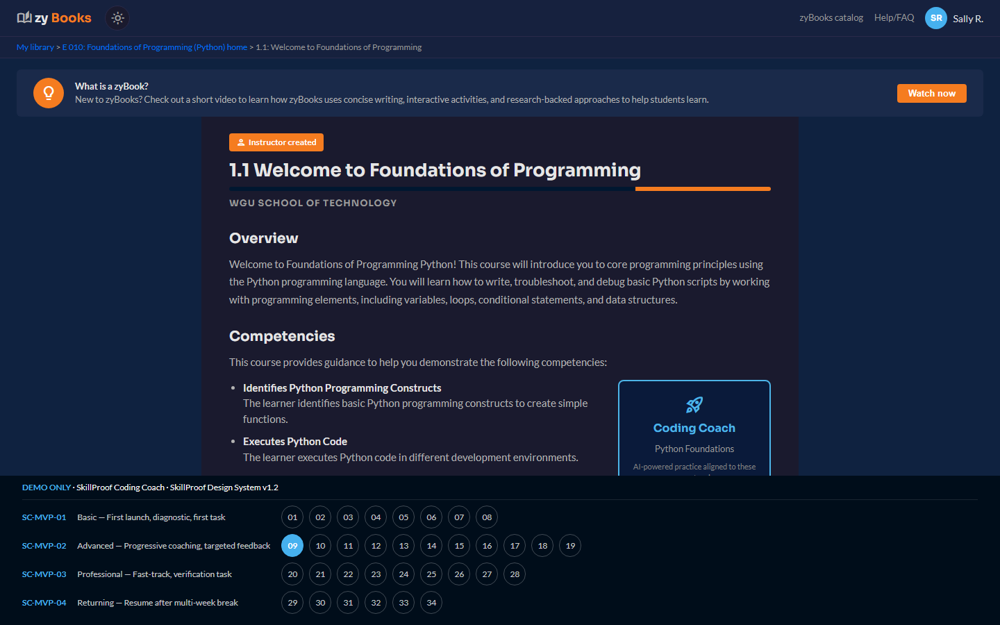
The Coding Coach opens with the same entry screen as SC-MVP-01: “Coding Coach — Python Foundations” heading, plain-language description, “Begin Diagnostic” CTA, trust signals, and 13 practice area list. Sally clicks “Begin Diagnostic.”
Question 3 of 10, "Basic Syntax & Data Types" at 30%. Prompt asks Sally to define and use variables.
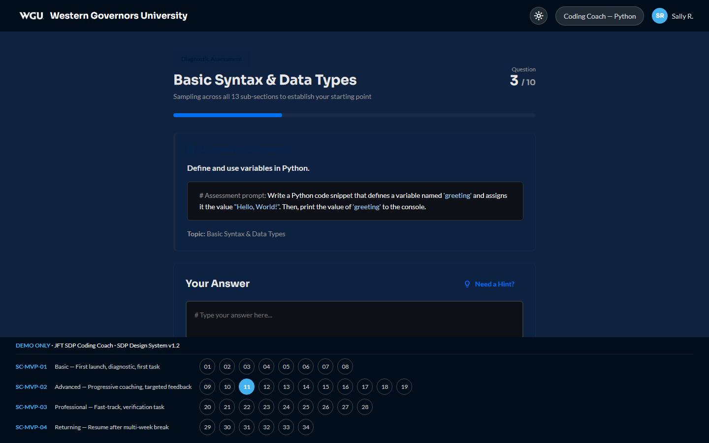
Question 7 of 10, "Control Flow & Logic" at 70%. Prompt asks Sally to write a check_grade function.
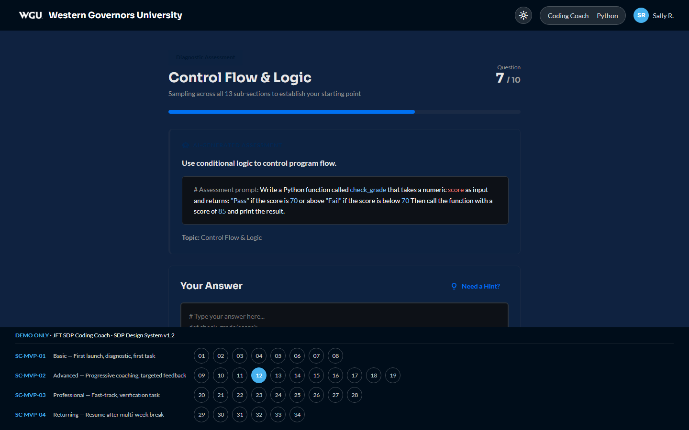
"Data Structures: Lists, Tuples, Sets, Dictionaries" — a more advanced diagnostic question reflecting Sally's partial knowledge.
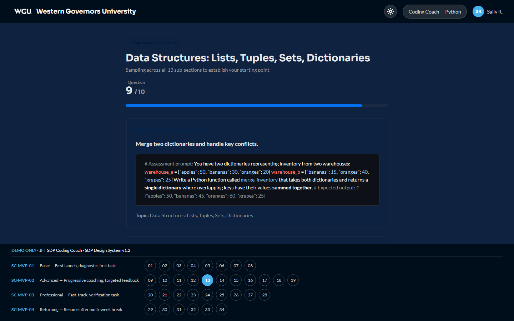
Sally's diagnostic reveals partial knowledge. The progress map shows: "13 sub-sections · 1 in progress · 12 not started." Data Structures is marked "In Progress — Foundational level." Basic Syntax shows "Completed diagnostic baseline."
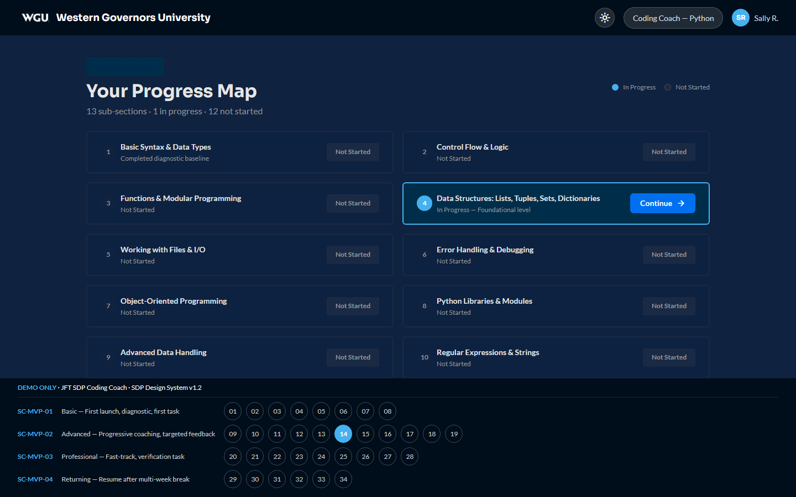
The AI prompt asks for the Python syntax to append 'grape' to a list. Sally answers correctly with fruits.append('grape'). The platform confirms with specific feedback and notes difficulty will increase.
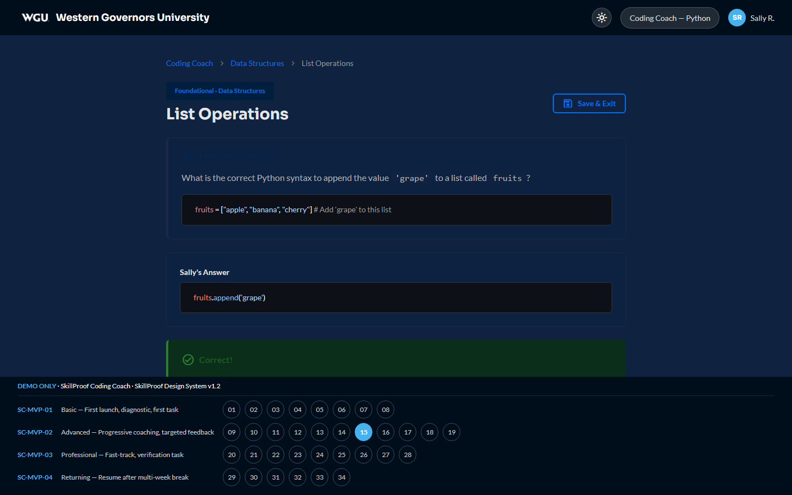
At increased difficulty on dictionary iteration, Sally answers incorrectly — her code prints the entire dictionary instead of individual key-value pairs. The platform generates targeted feedback identifying the specific error and provides a concrete correct example using .items() and f-string formatting. "Try Next Question" at same difficulty level.
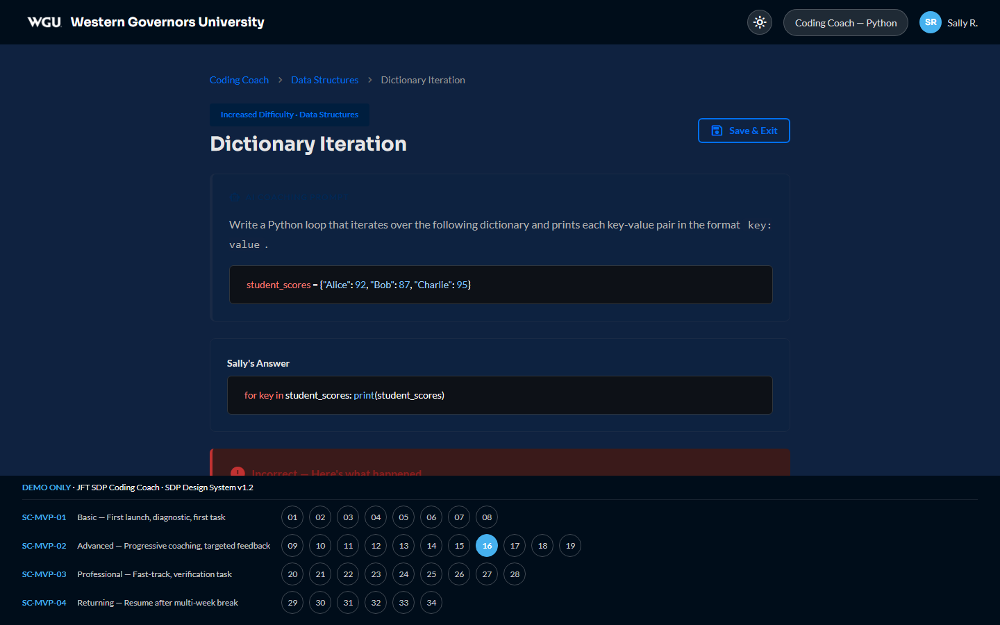
A new question at the same difficulty verifies gap resolution. Sally is asked to filter the student_scores dictionary, printing only students who scored 90 or above.
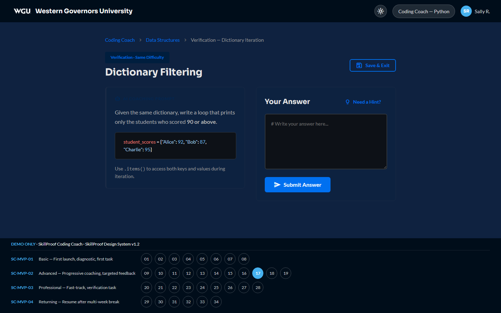
Sally answers correctly. "Verification Passed — Gap resolved — difficulty advancing." Progression: Foundational → Intermediate → Advanced. Identical questions are never repeated within a session. Throughout coaching, a persistent session-stats display shows the three canonical fields — Sub-section (e.g., "Data Structures"), Tasks completed (e.g., 3), and Current difficulty (e.g., "Intermediate") — so Sally always knows her progression state without leaving the active task.
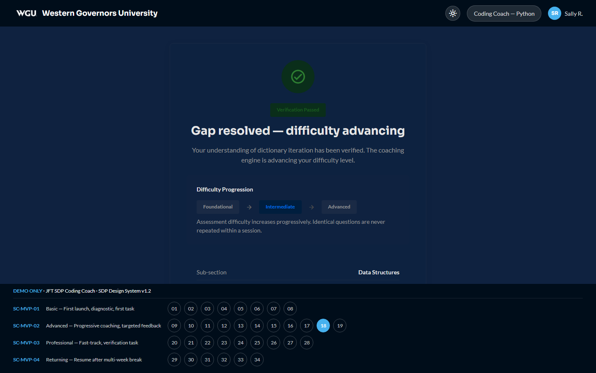
Confirmation: Data Structures, 4 tasks completed, Intermediate difficulty, 2 of 13 sub-sections explored, 22 min session, resume at Dictionary Comprehensions — Task 6.
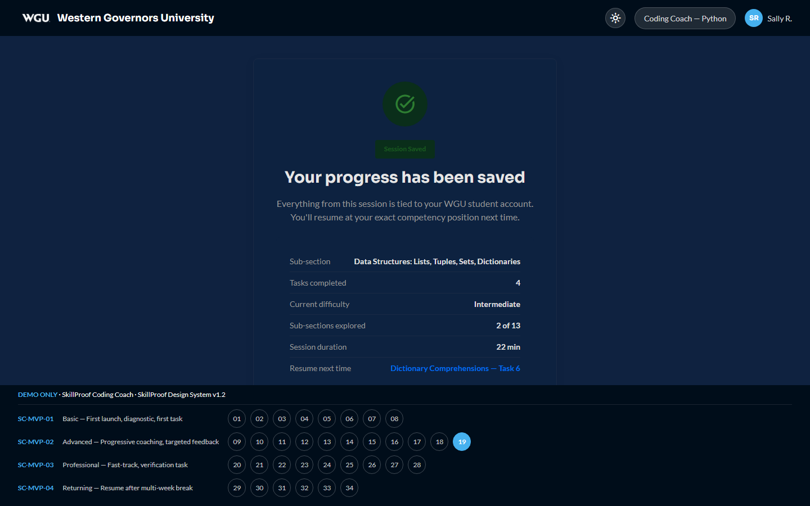
Expected Outcome
- Difficulty increases progressively and does not repeat identical questions within a session.
- Incorrect-answer feedback is specific to Sally's actual error, not generic.
- Session progress is fully preserved. Sally resumes at her exact competency position.
- Progress map updates in real time.
- Verification questions confirm gap resolution before difficulty advances.
Notes for JFT
- Feedback specificity is the primary quality risk for the MVP coaching experience. JFT must demonstrate (if it is not present in the PoC codebase) in future iterations that feedback varies meaningfully across different incorrect answers to the same question. A templated response that ignores what the student actually wrote does not satisfy this requirement.
- The difficulty ceiling for each SDP sub-section is defined by the existing v1 Cicada codebase and is inherited as-is for the MVP. JFT must document how difficulty levels are parameterized in the LLM prompt and flag any sub-sections where the ceiling logic requires calibration before production deployment. We will use this documentation to determine future iterations/capabilities, such as the need to re-build the difficulty logic for other programming languages/subjects.
- Session progress persistence strategy must be documented in JFT’s technical design. FERPA requirements apply to all stored student interaction data. The MVP does not store exact question-and-response state; it stores competency-level progress indicators and session timestamps against the student’s WGU ID.
- The storyboard shows three diagnostic questions to illustrate the range of difficulty and sub-section sampling. The actual diagnostic may contain up to 10 questions.
Experienced Developer Fast-Tracks Through Coaching Baseline
Context
Sally is a software developer enrolled in E010 with several years of professional Python experience. She accesses the coding coach expecting it to recognize her existing skills quickly so she is not required to work through coaching content she does not need. For scenario clarity, Sally represents the Student user type with an applied-level professional knowledge profile.
Trigger
Sally clicks the “Coding Coach — Python” resource link in E010. The LTI 1.3 launch completes, WGU SSO confirms her identity silently, and the coaching platform opens in a new browser tab.
Sally is reading her zyBooks course page for E010. She clicks the “Coding Coach” button next to the Competencies section.
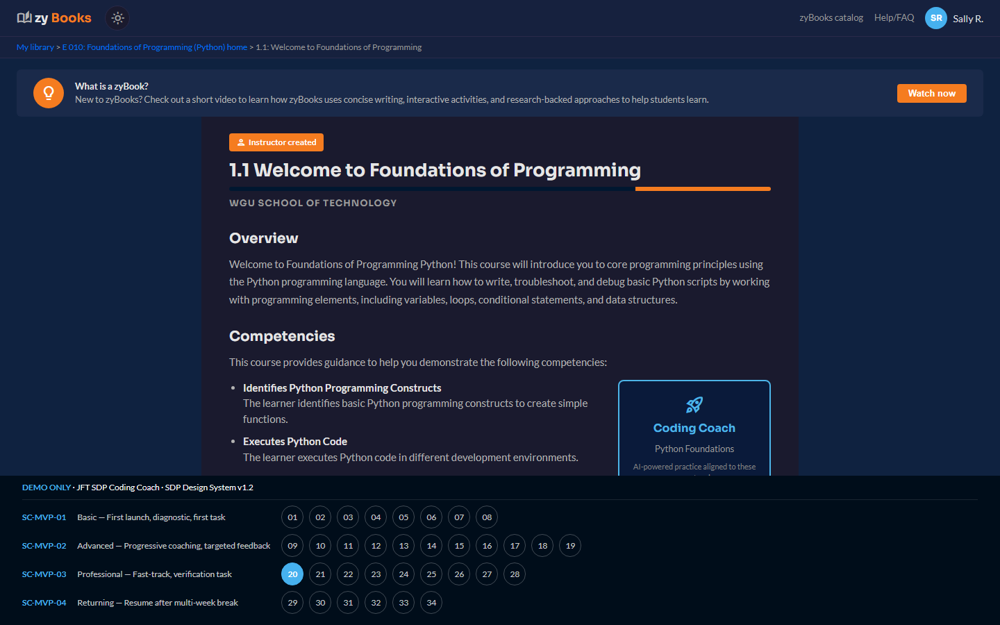
The entry screen with "Begin Diagnostic" CTA. Sally clicks to start.
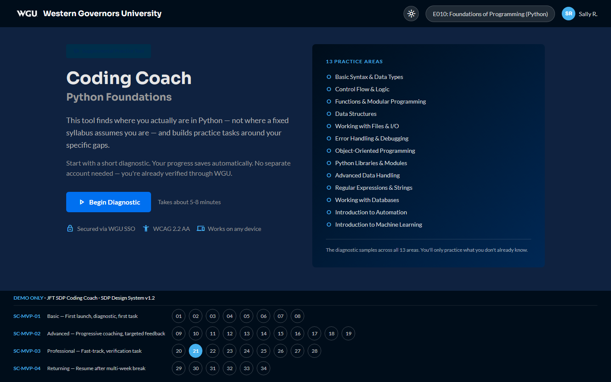
Question 3 of 10, "Basic Syntax & Data Types." Sally's professional experience means she completes this quickly.
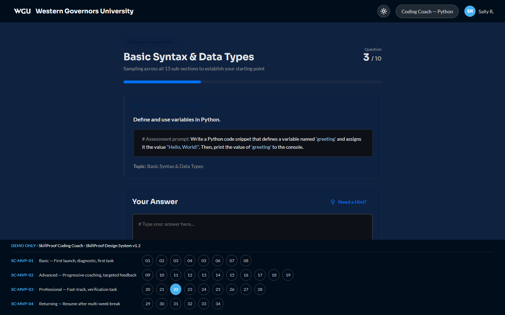
Question 7 of 10, "Control Flow & Logic." Prompt asks to write a check_grade function.
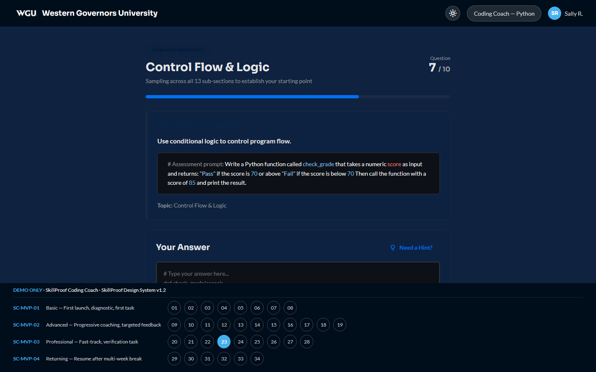
"Data Structures: Lists, Tuples, Sets, Dictionaries" — advanced diagnostic question.
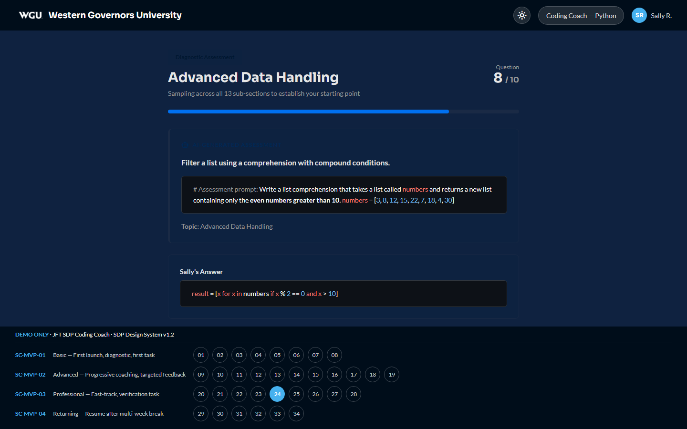
Question 8 of 10, "Advanced Data Handling" at 80%. Sally writes a list comprehension with compound filtering. The platform responds: "Your response demonstrates fluent use of list comprehensions. This is characteristic of an experienced Python developer. The diagnostic is calibrating your baseline."
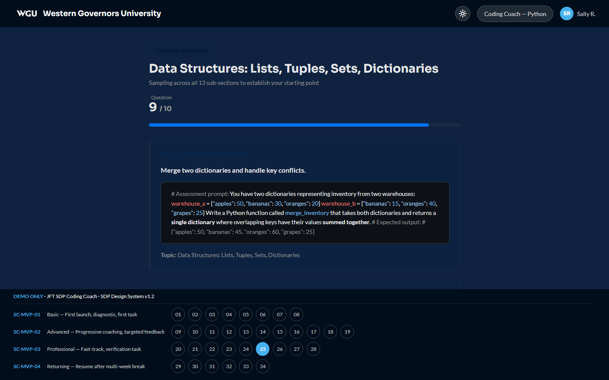
"Strong baseline detected." 12 of 13 sub-sections show mastery via the diagnostic — checkmarks confirm Sally's responses across Basic Syntax, Control Flow, Data Structures, OOP, error handling, and the other applied-skill areas met the fast-track threshold defined by the v1 Cicada codebase. Only Functions & Modular Programming remains marked "pending" because the diagnostic question pool did not adequately sample module-level skills (importable file structure, __name__ == "__main__" guards, multi-function organization). A short hands-on verification task is required before coaching content for that single sub-section is suppressed. "Begin Verification Task" CTA.
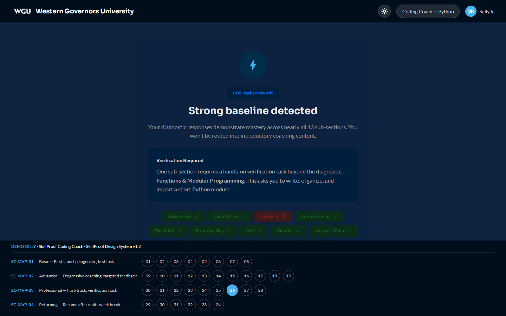
Sally must create a math_utils.py module with add and multiply functions, a __name__ == "__main__" guard, and demonstrate importing. Alert: "Your code is evaluated by the AI as text. There is no in-browser code execution environment."
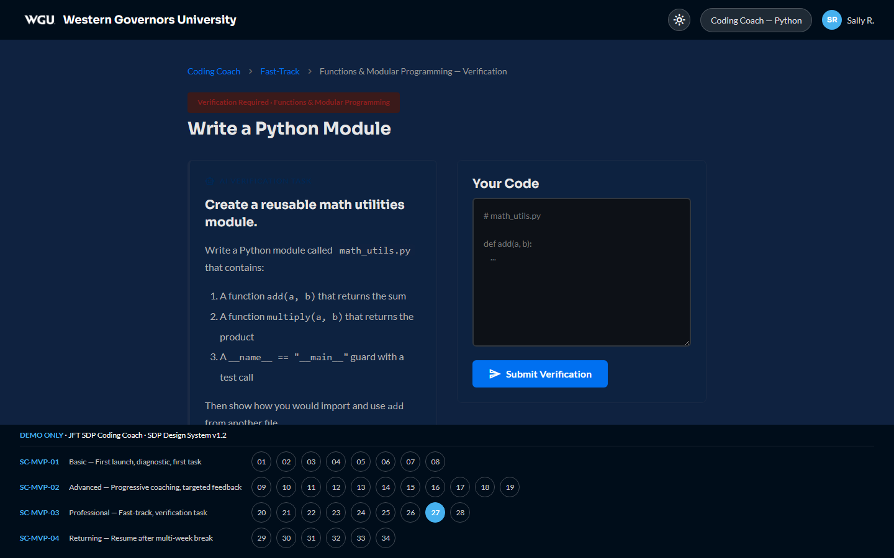
"No coaching gaps identified. Proficiency confirmed across all 13 sub-sections." Options: continue practicing, select any sub-section for targeted practice, or return to E010.
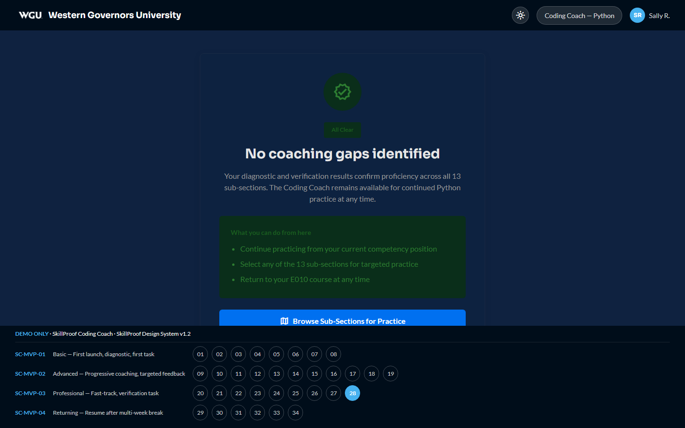
Expected Outcome
- Sally is not routed into coaching content for sub-sections where mastery was demonstrated.
- At least one sub-section requires verification beyond the diagnostic.
- The full fast-track path is achievable in one short session.
- From the no-gaps summary, Sally can browse sub-sections for targeted practice.
Notes for JFT
- Fast-track threshold logic is inherited from the v1 Cicada codebase as-is. JFT must document the existing threshold parameters — specifically what diagnostic performance level triggers automatic fast-track versus routing into standard coaching — in the technical design document before UAT.
- The MVP does not include an in-browser code execution environment. All submitted code is evaluated by the LLM as text (this is an assumption based on UI interaction of v1 code). JFT should flag any sub-sections in the v1 codebase where text-based LLM evaluation of code is insufficient for reliable competency assessment.
- Student-directed sub-section selection — allowing a student to choose which sub-section to practice regardless of platform routing — is supported in the MVP.
- Fast-tracked students retain access to the coaching tool throughout their course enrollment. The tool is available for continued practice from the student’s current competency state at any time.
Student Returns and Resumes a Prior Session
Context
Sally worked through two coaching sessions in her first week of E010, making intermediate progress in two SDP sub-sections (Basic Syntax & Data Types completed baseline; Data Structures: Lists, Tuples, Sets, and Dictionaries in progress at intermediate level). She then paused for several weeks due to work commitments. She is now returning to the coding coach. Session progress is preserved and Sally resumes at the last completed task boundary. A brief re-assessment verifies retention before coaching resumes at her prior difficulty level.
Trigger
Sally clicks the “Coding Coach — Python” resource link in E010 after a multi-week break. The LTI 1.3 launch completes, WGU SSO confirms her identity silently, and the coaching platform opens in a new browser tab.
Sally is reading her zyBooks course page for E010. She clicks the “Coding Coach” button next to the Competencies section.
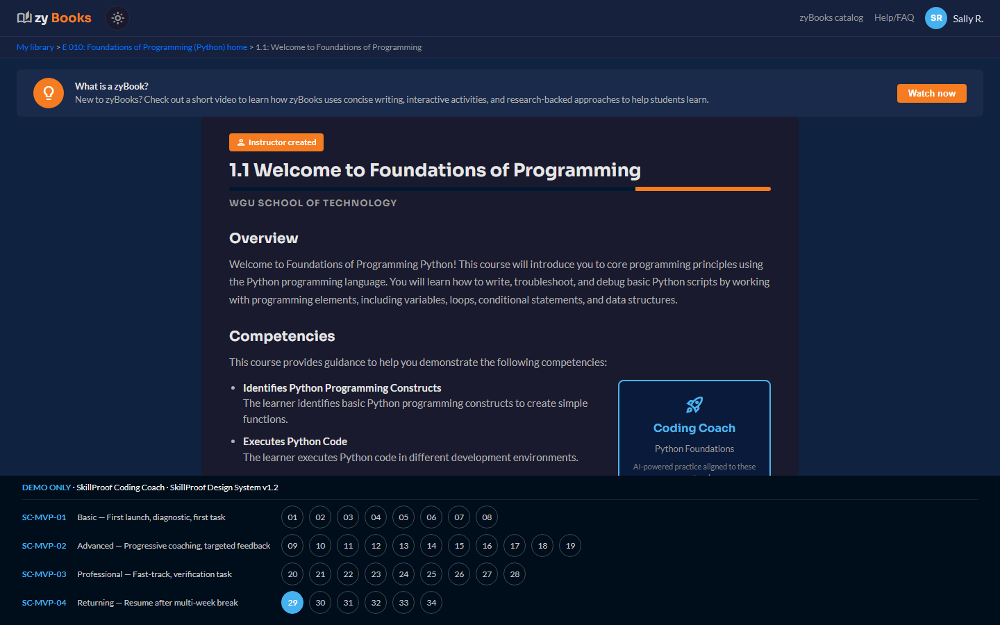
"Welcome back, Sally." Session snapshot: Last session (3 weeks ago), Active sub-section (Data Structures at Intermediate), Resume point (Dictionary Iteration — Task 5), Sub-sections explored (2 of 13). Full progress map with all 13 sub-sections and current status. "Resume Coaching" and "Return to Course" buttons available.
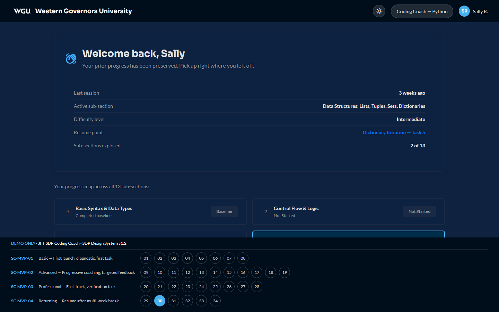
Brief re-assessment to verify retention after Sally's multi-week break. Question 1 of 2, "Data Structures" with the "Re-Assessment · Welcome Back" badge prominently displayed at the top of the question card — signalling that this is a retention check, not a fresh diagnostic, and that the platform is calibrating whether Sally retained competency at her prior difficulty level (Intermediate) before resuming coaching. Prompt: access and transform nested dictionary data — print each student's name and average grade. Topic: "Data Structures — Nested Dictionaries (Intermediate)."
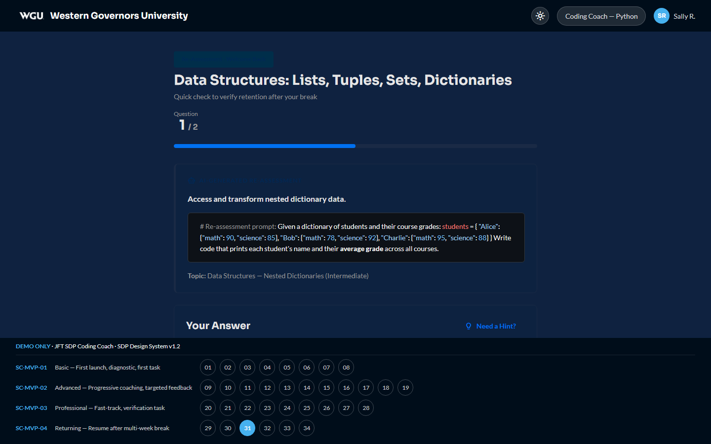
Question 2 of 2, "Control Flow & Logic" at 100%. Write a function count_passing that returns pass/fail counts from a list of scores. Topic: "Control Flow & Logic — Loops and Conditionals (Intermediate)."
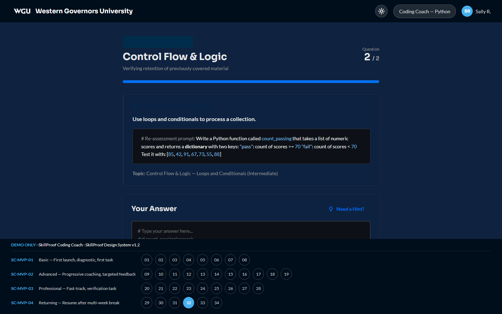
Sally picks up Data Structures at Intermediate. Breadcrumb: "Coding Coach > Data Structures > Dictionary Operations." Prompt: filter a dictionary by computed criteria — return students above the class average. Tip: use sum() and len() for the average.
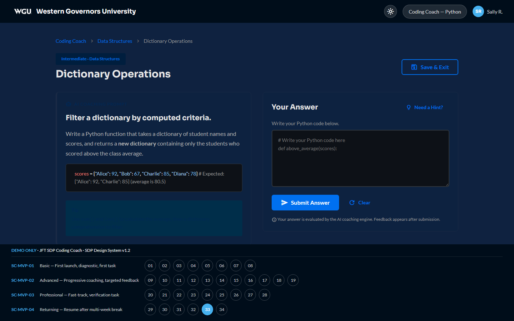
Data Structures, 2 tasks, Intermediate, 2 of 13 explored, 18 min, resume at Dictionary Operations — Task 8.
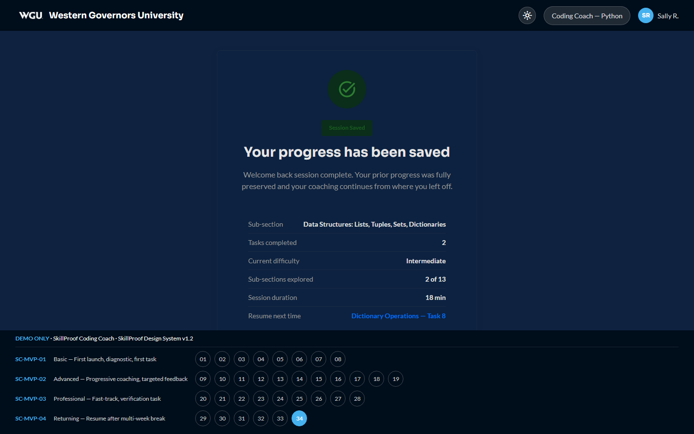
Expected Outcome
- Prior progress is preserved and surfaced immediately. No restart from initial diagnostic.
- Returning-learner screen shows last session date, active sub-section, difficulty, and resume point.
- Brief re-assessment (2 questions) verifies retention before coaching resumes.
- Coaching resumes at last completed task boundary at prior difficulty level.
- If performance indicates decay, difficulty adjusts downward per Cicada v1 logic silently.
Notes for JFT
- Session progress persistence is a foundational MVP requirement. If session progress is lost on re-entry — for any reason, including infrastructure changes or deployment updates — the tool fails its primary value proposition for returning students.
- Configurable re-assessment thresholds after extended breaks are a future capability (see JFT SDP User Scenario Catalog v1.1, SC-FUT-01). The brief re-assessment shown in the storyboard verifies retention at the student’s prior difficulty level; it does not recalibrate the full diagnostic baseline.
- WGU’s rolling enrollment means students have highly variable break patterns. Session persistence must handle gaps of any length without data loss. FERPA data retention requirements mandate that coaching session data be retained for up to three years from the session date. A student returning after more than three years has no retained data and is treated as a new user.
- In-session regression behavior is handled by the adaptive difficulty algorithm in the v1 Cicada codebase: the algorithm reduces question difficulty in response to sustained incorrect answers. No explicit regression detection logic or student notification is added in the MVP. JFT must document how the v1 difficulty progression algorithm handles sustained regression patterns so that this behavior is testable during UAT.
Tenant Admin, Instructor, and Super Admin
Source
The v1.3 User Scenario Catalog (05 May 2026) extends v1.2 with six additional scenarios that sequence post-MVP work. SC-ADD-01 is an acceptance-level rollup of the four v1.2 MVP scenarios (in progress separately, no new scope). SC-ADD-02 through SC-ADD-06 introduce the Tenant Admin, Instructor, and Super Admin user types and platform capabilities — covered in this catalog with full storyboard walkthroughs against three new HTML files.
Per-persona portals
Each persona authenticates separately via its own secret LRPS deep link. Each portal is a self-contained HTML file that JFT will build using this catalog as the design spec:
- Alice (Tenant Admin) —
tenant_admin.html— SC-ADD-02 (Portal & Course Configuration), SC-ADD-05 (Data Portability), SC-ADD-06 (Incident Response & SLA) — 27 screens - Charlie (Instructor) —
instructor.html— SC-ADD-03 (Instructor Dashboard & At-Risk Intervention) — 8 screens - Bob (Super Admin) —
super_admin.html— SC-ADD-04 (Super Admin Governance & Cost Audit) — 8 screens
All three portals share the same SDP Design System v1.2 chrome, WGU FY26 brand tokens, navbar pattern, and component library so they read as one cohesive product family.
SC-ADD-01: Acceptance Validation of the MVP Coaching Loop
SC-ADD-01 is the acceptance-level rollup of the four v1.2 MVP scenarios. It introduces no new scope and is in progress separately. No new screens; the original SC-MVP-01 through SC-MVP-04 walkthroughs above carry the visual coverage for this acceptance validation.
Tenant Admin Portal and Course Configuration
Workflow
Alice logs into the Tenant Admin Portal via secret LRPS deep link. Multi-tenant SaaS scoping shows only her assigned Program Subject. She creates a new Subject, enters Topics and Learning Objectives, and configures AI prompt options (e.g., profile data, domain limits, jailbreaking instructions, preferred model) and scoring details. “Deploy to Production” triggers the automated CI/CD pipeline; the new course goes live for Sally.
Alice opens the secret LRPS deep link. WGU SSO completes silently and her role is mapped to Tenant Admin.
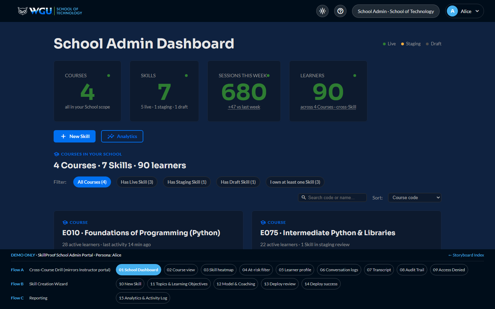
Multi-tenant scoping shows Alice only her assigned Program Subject (Foundations of Programming — Python). Four subjects listed (E010 in production, E135 in production, E075 staging, E120 draft). Status legend at top right.
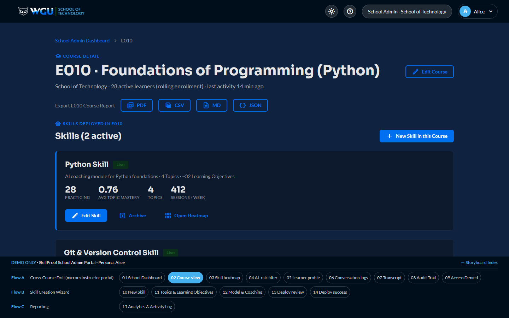
Step 1 of 5. Subject code, title, description, owner (Alice), Program Subject (locked by tenant scoping). Saved-as-draft alert.
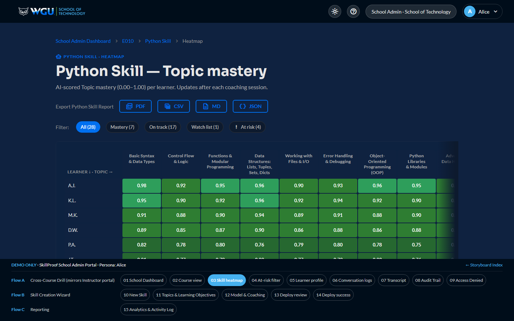
Step 2 of 5. Numbered list of 4 topics with edit/reorder affordances and inline LO counts. Tip alert about ideal topic count.
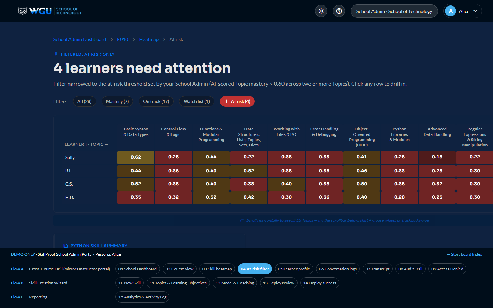
Step 3 of 5. Toggle switches for profile data, domain limits, jailbreak guard, sandbox. Custom prompt addendum textarea. Right-side compiled-prompt preview shows the final system prompt JFT will send to the model. A one-line “Last edited” indicator below the form references the most recent author + timestamp; diff view, full version history, and rollback are deferred for JFT effort estimation.
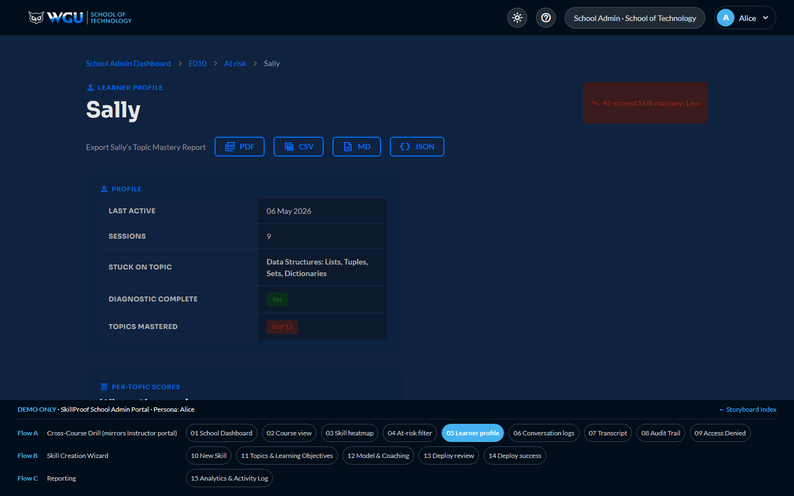
Step 4 of 5. Three radio cards: Claude Sonnet 4.5 (recommended, selected), GPT-5, Gemini 2.5 Pro. Each card shows reasoning/code capability badges plus cost and latency tiers. Fallback chain alert references SC-ADD-06.
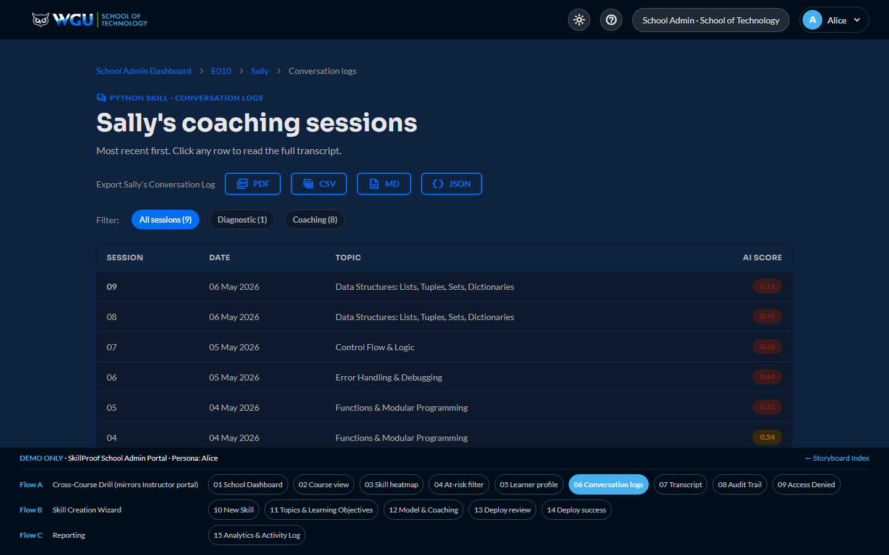
Step 5 of 5. Per-objective rubric table (10 LOs × weight, threshold, pattern). Total weight check + mastery threshold input.
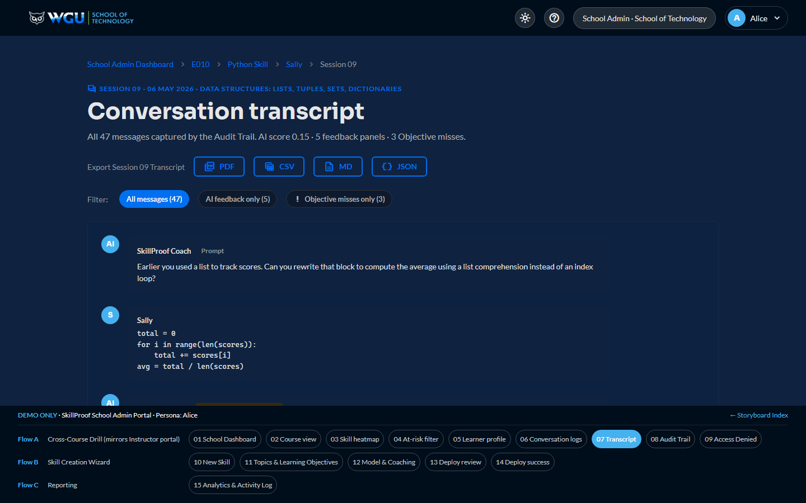
Subject summary card + warning banner + “Deploy to Production” CTA. Five-step Stepper component shows live pipeline status: Validate ✓ · Build ✓ · Test (running) · Deploy · Verify.
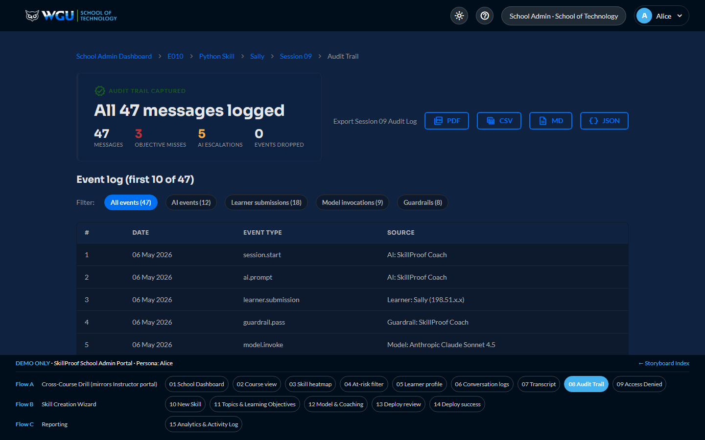
Green-tinted success panel with pipeline duration (2m 47s), “View live course” CTA, build identifier, and audit-logged stamp.
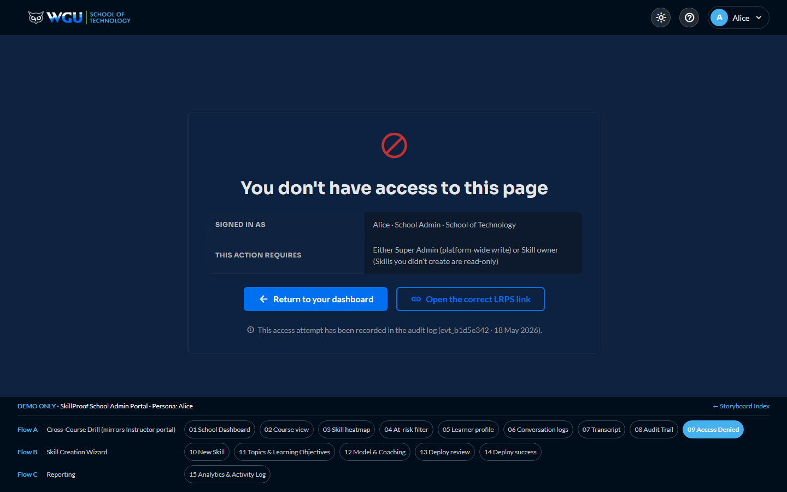
Two-column tenant configuration: left card with display name, tenant logo upload, primary accent color picker, custom domain (DNS verified, TLS issued), favicon, and footer copy. Right card shows a learner-facing preview of how Sally sees the WGU PDev branding when she launches the Coding Coach. Tenant-scoped; other WGU tenants keep their own branding.
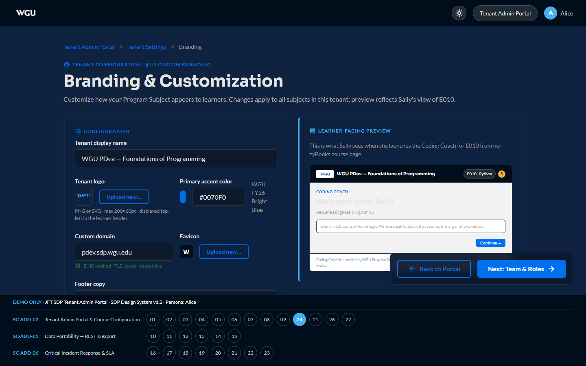
5-row team table with Owner / Editor / Viewer role badges (Alice plus Sam, Robin, Quinn, and a pending Kit invite); recent role-change audit log; 10-row permissions matrix showing what each role can do. Multi-tenant isolation alert reinforces that role grants don’t cross tenant boundaries.
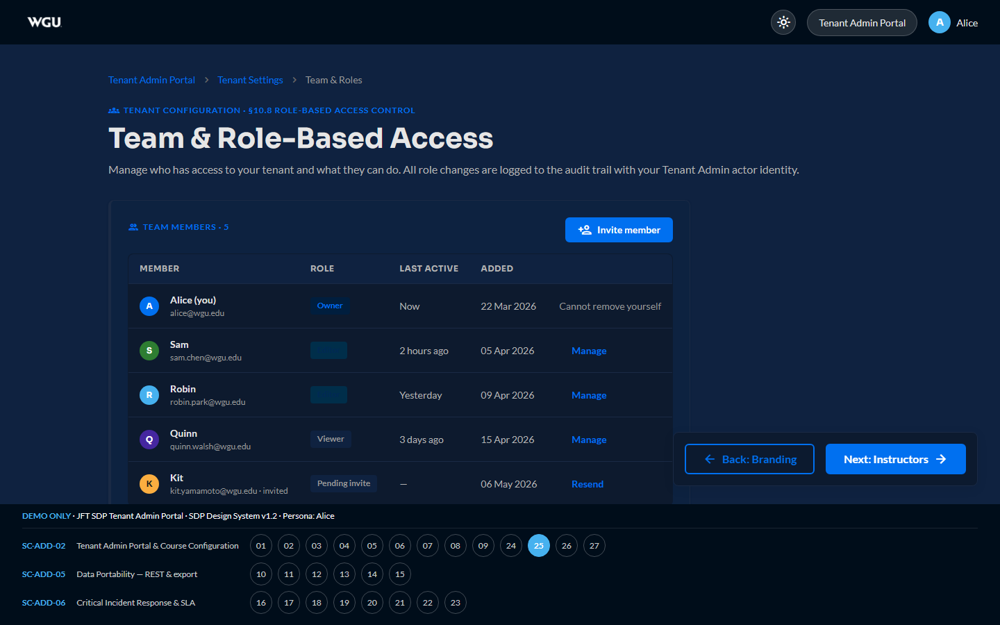
Table of 7 instructors active across Alice’s tenant, with course chips for each course they teach (E010, E075, E135), active-learner counts, last-active stamp, status badge, and per-row Manage CTA. Right-rail card summarizes course-to-instructor coverage; recent-assignment audit log preview. Bulk-import CSV + Add Instructor CTAs at top. Footer alert clarifies that LRPS owns account provisioning at the WGU identity layer; this screen owns course-level assignment within Alice’s tenant.
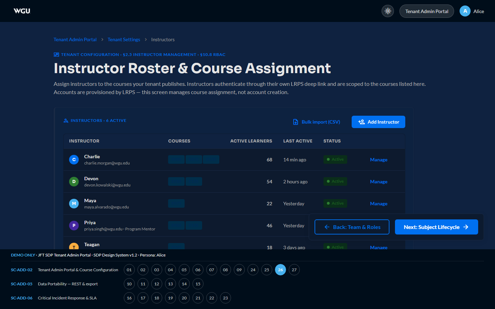
Two-section layout: Active Subjects table (E010 / E075 / E135 with deployed-prompt version, learner count, status, deactivate CTA) and Archived Subjects table (E020 legacy, E099 pilot) with retention dates per institutional policy and Restore CTAs. Right-rail “Deactivate Subject” preview panel shows the cutover date, retention policy (FERPA-aligned, configured at the platform level), required justification field, and a warning that the action writes to the cross-tenant audit log (§10.4). Footer clarifies that deactivation does not delete learner-progress data, instructor assignments, or audit logs — they persist through the retention window for advising continuity.
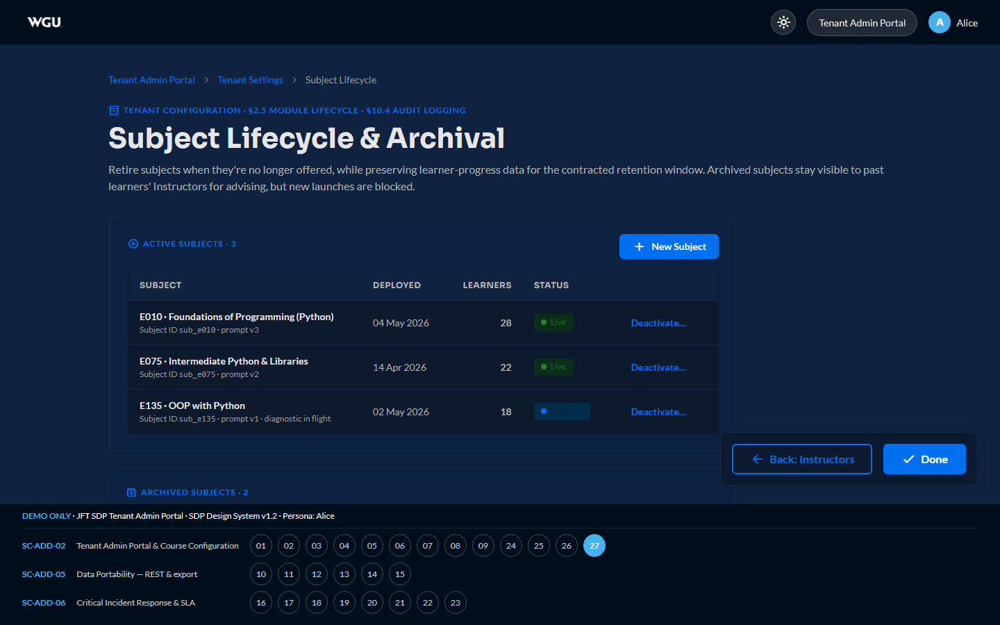
Instructor Dashboard and At-Risk Intervention
Workflow
Charlie accesses the Instructor Dashboard via secret LRPS deep link and opens the Data Visualization panel showing a Student Heatmap. He identifies Sally as at-risk: assessment complete, AI-scored competency low. He drills into her conversation logs to review AI feedback, confirming the Audit Trail captures all interactions.
Charlie’s separately-authenticated LRPS link. Role mapped: Instructor.
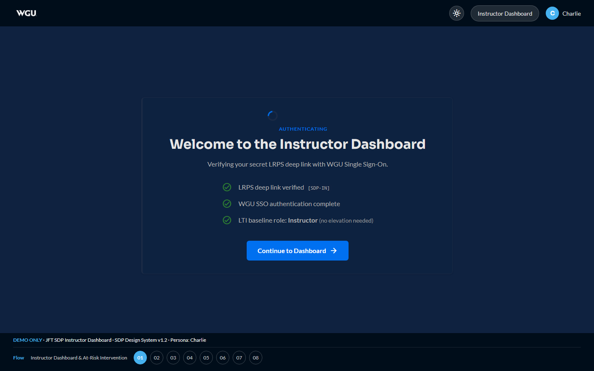
Charlie’s three courses (E010, E075, E135) under WGU’s rolling-enrollment model — no fixed sections or cohorts. Active course (E010) shows 28 active learners, 76% avg competency, 4 at-risk badge. “4 learners flagged at-risk in E010 today” alert.
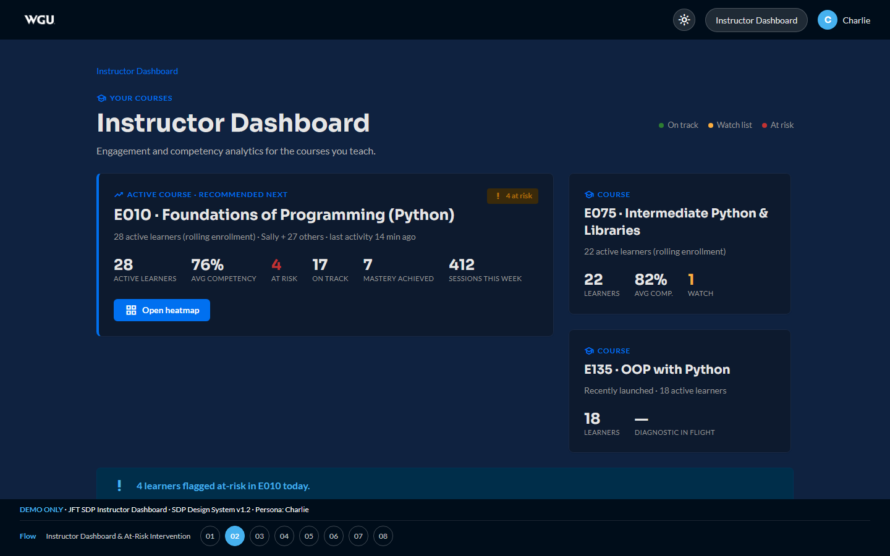
CSS-grid heatmap of 15 of 28 learners × 4 competencies. Color scale runs red (28) to green (98). Filter chips: All / Mastery / On track / Watch / At risk. Sally’s row tinted danger-pink. Header bar adds “Course report (PDF)” and “CSV” export CTAs (per §7.14).
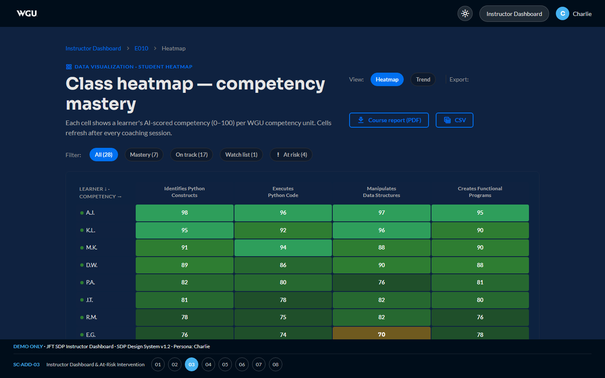
Filter narrowed to 4 at-risk learners. Course summary side panel shows the lowest-scoring competency (Manipulates Data Structures, avg 42.4) and a suggestion. Sally row clickable to drill in.
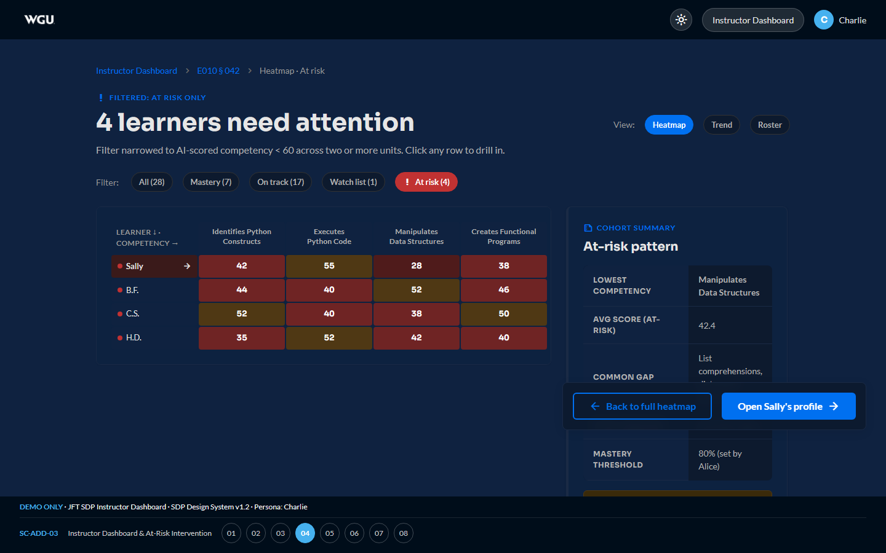
Anonymized identifier lnr_4a3b2c1d. Profile stats card + 8-row per-objective scores table with score pills (low/med/high). “AI-scored competency: Low” badge. Pattern callout about explain/reflect items.
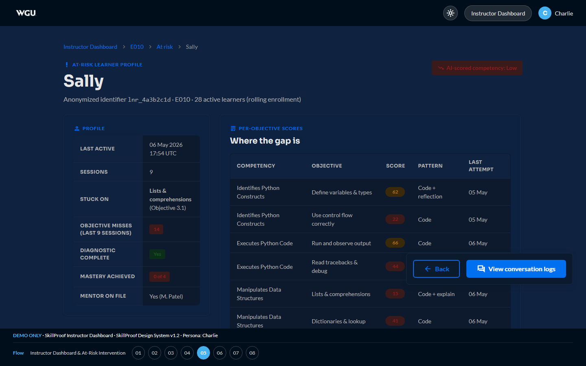
Nine sessions table with date, topic, objective, AI score, duration, Audit Trail “Captured” badge per row. Most recent session (09) is clickable.
Chat-style transcript: Sally’s loop submission vs SDP Coach feedback panels (LO miss, Reframe). “47 messages captured” badge confirms full Audit Trail. Mark for outreach / Refer to mentor / View Audit Trail / Export CTAs.
Green feedback panel + 5-stat row (47 messages, 18m 12s, 0 dropped, 3 score updates, 100% capture integrity). 10-row event log table with sha256 hashes. RBAC alert: source IPs masked for instructor view.
Super Admin Governance and Cost Audit
Workflow
Bob reviews Token Usage Tracking to identify high-consumption tenants and tightens Global Rate Limits in response to a spike. He pulls a Compliance Report to verify TLS 1.3 encryption across all data paths. He checks Geo-redundancy status to confirm cross-region resilience.
Bob authenticates with MFA. Role mapped: Super Admin · Platform Operations. Privileged-session warning surfaces audit logging.
4 KPI gauges (7 tenants, 3,842 active learners, $4,287 MTD spend, 62% rate-limit headroom). Active alert: PDev token spike. Recent platform events feed. Quick links to the four governance domains.
3 aggregate gauges (MTD spend warning, tokens consumed, projection danger). Per-tenant breakdown of 7 tenants with utilization meters; PDev flagged with spike badge.
30-bar daily cost chart, last 4 days highlighted as the spike. Top consuming subjects table (E010, E075, E135). “Likely cause” card identifies an enrollment surge in E010 plus new prompt config. CTA to adjust rate limits.
New limits form (tenant 2,400 / subject 1,200 / learner 60 req/hr / burst 120 in 60s). 6-row projected effect table shows MTD spend back inside budget with imperceptible learner-latency impact. Pending audit-trail entry preview.
Combined TLS encryption audit (§10.7) + FERPA privacy audit (§10.1). 4 encryption KPI gauges (all paths TLS 1.3, 100% cert validity, 3-day soonest expiry, last scan stamp). 4 FERPA KPI gauges (100% staff training, audit trail retention per institutional policy, 3-yr inactive learner data retention per §10.2, parental notification N/A for adult learners). 6-row FERPA control table referencing 34 CFR §§99.10 / 99.31 / 99.32 / 99.37 plus generic WGU institutional policies (data breach drill, staff FERPA training). Service-by-service TLS table (TLS version + cert expiry + last scan + pass status). Generate-PDF CTA.
3 region cards: Primary US East (2,401 learners), Secondary US West (1,156), DR EU (285). Each shows P50/P95 latency, replication lag, last failover stamp. 4-row recent failover table. RTO well under 4-hr target.
Filter chips + 11-row event table spanning all v1.3 personas’ actions (Bob, Alice, Charlie, JFT CSM, system). Severity and result badges. Source attribution. “Showing 11 of 4,287 events in last 24h. Retention: per institutional policy (FERPA-aligned).”
Tenant Admin Data Portability
Workflow
Alice uses the RESTful API to query student scores for transfer into WGU internal systems. She uses one-click export to download a JSON or CSV file with engagement metrics for a stakeholder meeting.
Two entry cards side-by-side: REST API (OAuth 2.0 auth, base URL, per-tenant rate limit, endpoint catalog finalized at onboarding) and One-click export (JSON / CSV / UTF-8, engagement metrics dataset, audit retention). Tenant scoping alert at bottom.
GET method + endpoint + 4 query params (limit, since, fields, order). Send / Recent / Copy as cURL CTAs. Side panel: Auth (bearer token, last 4 chars), tenant lock, rate-limit usage well below tenant tier cap. PII handling alert.
Status row (200 OK, 142 ms, 1,284 records). Syntax-highlighted JSON code block: meta + 2 sample records (anonymized IDs, competency, score, last_active, sessions, mastery flag). Copy / Download / Open in CSV view CTAs.
Step 1 of 3. Engagement metrics dataset (selected, ~1,284 rows). Tip alert clarifies that engagement metrics is the v1.3 contracted dataset (per SC-ADD-05 catalog narrative + SOW §8.7); score history and conversation transcripts are post-pilot roadmap candidates pending FERPA scope review.
Step 2 of 3. CSV / JSON tab switcher (CSV active). 5-row preview table with engagement columns. Time-range select (last 35 days) + columns chip-list with “+ Add” affordance.
Green-tinted success panel. File-meta card: engagement-metrics-pdev-e010-2026-05-07.csv (1,284 rows, 184 KB, CSV, UTF-8). Download / Open in Sheets / Back CTAs. Audit ID stamp.
Critical Incident Response and SLA Verification
Workflow
A primary LLM provider goes down. 24/7 Proactive Monitoring detects the failure and triggers the LLM Fallback mechanism. Alice is notified and logs a P1 ticket with JFT Support. JFT Support acknowledges within the §9.5 2-hour P1 SLA (with the JFT CSM as WGU-facing POC per §9.1.4) to confirm fallback success and that the 99.95% Uptime SLA is maintained.
99.97% uptime gauge + zero-incident summary. 5 service rows (Model Router, Auth, API Gateway, Data Export, Telemetry) all green. Sets the “before” state.
Amber alert banner timestamps the failure (09:43:21 UTC). Service rows show Model Router degraded, primary LLM provider unreachable, fallback LLM provider active and serving all active learner sessions per §6.5. CTAs: Log P1 ticket / View notification / Incident timeline.
Email metadata (from JFT CSM, to Alice, channels: Email + Toast + SMS). Body confirms fallback automatic, references the 2-hr SLA, and notes no learner action required.
Severity locked to P1 by monitoring. Affected services chips. Started-at, tenant lock. Title and description prefilled. Notify list. Linked alert ID. Submit / Back floating actions.
Green-tinted confirmation. Ticket metadata table (status In Progress, severity P1, opened stamp, 2-hr SLA target, linked alert). View thread / Back CTAs.
Ticket header summary + 6-stat row (severity, opened, first response 6 min, SLA target, ETA, notify). 4-bubble chat thread (Alice auto-logged + 3 from CSM Jordan including SLA-on-track update and final resolution). Reply form + send.
Green feedback panel announces 11:08:14 UTC restoration. Before / during / after status table for primary, fallback, router, learner sessions, SLA breaches. 0 sessions failed across the 1h 24m window.
99.97% uptime gauge + 21m downtime budget remaining gauge. 4-row recent incidents table (today’s LLM event, prior gateway flap, telemetry back-pressure, auth anomaly). Next SLA report scheduled 30 May 2026.
Storyboard Reference
The v3 HTML storyboard is a medium-fidelity visual sample containing 34 interactive screens across all four scenarios. It was built with Claude Code for rapid visualization and illustrates roughly what the MVP could look like on a desktop browser — it is not a pixel-perfect specification, has not been formally audited for accessibility, and has not been tested for mobile responsiveness. The live interactive prototype is available at: brady-wgu.github.io/JFT_SDP_MVP
| Scenario | Screens | Screen IDs |
|---|---|---|
| SC-MVP-01 | 8 | 1, 2, 3, 4, 5, 6, 7, 8 |
| SC-MVP-02 | 11 | 9, 10, 11, 12, 13, 14, 15, 16, 17, 18, 19 |
| SC-MVP-03 | 9 | 20, 21, 22, 23, 24, 25, 26, 27, 28 |
| SC-MVP-04 | 6 | 29, 30, 31, 32, 33, 34 |
| v1.3 Additional Scenarios — per-persona portals | ||
| SC-ADD-02 · tenant_admin/index.html | 13 | 1, 2, 3, 4, 5, 6, 7, 8, 9, 24, 25, 26, 27 |
| SC-ADD-03 · instructor/index.html | 8 | 1, 2, 3, 4, 5, 6, 7, 8 |
| SC-ADD-04 · super_admin/index.html | 8 | 1, 2, 3, 4, 5, 6, 7, 8 |
| SC-ADD-05 · tenant_admin/index.html | 6 | 10, 11, 12, 13, 14, 15 |
| SC-ADD-06 · tenant_admin/index.html | 8 | 16, 17, 18, 19, 20, 21, 22, 23 |
| Total (across 4 HTML files) | 77 | |
Design System Compliance
- Typography: Sora (headings), Lato (body, code blocks). No monospace fonts.
- Colors: Deep Navy (#001730), Brand Blue (#0055D4), Sky Blue (#4DB5E8), Accent Red (#C13232), Ice Blue (#EEF6F9).
- Layout: 12-column grid, 8-point spacing, Paragon component classes.
- Accessibility: WCAG 2.2 AA, semantic HTML, ARIA labels, keyboard navigation.
Document Control
| Version | Date | Status | Changes |
|---|---|---|---|
| 1.0 | 30 Mar 2026 | Superseded | Initial MVP-focused scenario catalog shared with JFT. Scope limited to SC-MVP-01 through SC-MVP-04, with all open design questions resolved per MVP intent. Derived from JFT SDP User Scenario Catalog v1.1 (30 Mar 2026). |
| 1.1 | 30 Mar 2026 | Superseded | Added Section 4: Codebase Reference documenting Cicada v1.0 and v1.1, documentation status, and baseline version selection requirements. Updated Section 1 purpose statement to reflect deferred scenario set. Version bump from 1.0 to 1.1. |
| 1.2 | 07 Apr 2026 | Superseded | Aligned all scenario narratives with v3 HTML storyboard (34 screens). Each scenario is now self-contained with its own LMS entry and complete flow. Expanded all narrative steps with specific UI content, screen titles, and component descriptions. Added Storyboard Screen Map tables. SC-MVP-04 now includes brief re-assessment. Added Section 6: Storyboard Reference with screen count summary and design system compliance. Updated persona labels to clarify knowledge profiles. Typography corrected to SDP Design System v1.2 (Sora/Lato only, no monospace). Corrected LRPS descriptions per WGU LRPS team review (06 Apr 2026). |
| 1.3 | 07 May 2026 | Superseded | Extends v1.2 with the v1.3 User Scenario Catalog (05 May 2026). Adds SC-ADD-02 / 03 / 04 / 05 / 06 walkthroughs across three new per-persona portal HTML files: tenant_admin/index.html (Alice), instructor/index.html (Charlie), super_admin/index.html (Bob). Each portal authenticates separately via its own LRPS deep link but shares the SDP Design System v1.2 chrome and the WGU FY26 brand. SC-ADD-01 noted as in-progress separately (acceptance rollup of v1.2; no new scope). Storyboard total at v1.3: 73 screens / 4 HTML files / 4 personas. Real WGU FY26 White / Full-Color Reverse Corporation logos replace the placeholder wordmark across the new portals. |
| 1.3+ | 07 May 2026 | Superseded | Storyboard v4.4 extensions on top of catalog v1.3: SC-ADD-02 grew to 13 screens; SC-ADD-03 grew to 9 screens; SC-ADD-04 temporarily grew to 11 screens (added Third-Party Integrations + Learner Remediation + Billing & Cost Centers). Storyboard total reached 81 screens. |
| 1.3++ | 07 May 2026 | Superseded | Storyboard v4.8 trim: re-read of SOW main body confirmed three v4.4 Super Admin screens (Third-Party Integrations / Learner Remediation / Billing & Cost Centers) were not contract-grounded. Removed. SC-ADD-04 returns to 8 screens. Tenant Admin portal home (screen 2) trimmed: dropped real-time activity feed and infrastructure-status / SLA-uptime KPI gauges (those belong to Super Admin per User Profile); kept program-level KPIs (Subjects Live + Exports This Week) and 3-domain quick-launch nav. Tenant Admin screen 5 prompt-versions panel collapsed to a one-line "Last edited" indicator. Storyboard total: 78 screens. |
| 1.3+++ | 08 May 2026 | Superseded | Storyboard v4.9 second overboard sweep. Three additional fixes: (1) Tenant Admin REST API specifics ("14 endpoints", "600 req/hr") trimmed; (2) "JFT CSM 2-hour SLA" framing reframed; (3) Instructor screen 9 (Learner Search) removed. Storyboard total: 77 screens. |
| 1.3++++ | 08 May 2026 | Superseded | Storyboard v4.10 third overboard sweep. Four fixes: Parquet dropped, LLM vendor naming generic-ized in SC-ADD-06 incident screens, "7 years (FERPA default)" softened on Subject Lifecycle screen 27, export wizard trimmed from 3 datasets to 1. |
| 1.3+++++ | 08 May 2026 | Superseded | Storyboard v4.11 fourth overboard sweep. Two more fixes Pass 10 caught: (1) "Claude Sonnet 4.5 (primary)" escaped v4.10 generic-ization on the SC-ADD-06 baseline screen 16 — softened to "Primary LLM provider." (2) All 8 remaining "7 years" retention mentions softened across audit-log captions in Tenant Admin / Instructor / Super Admin: SOW §10.1 commits to "FERPA Compliance" generically and does not specify 7 years; the storyboard now reads "per institutional policy (FERPA-aligned)" everywhere. The "3-year inactive learner data" gauge in the Compliance Report is kept (matches SOW §10.2 "default three years"). Storyboard total still 77 screens; all in-place text edits. |
| 1.3++++++ | 08 May 2026 | Superseded | Storyboard v4.12 fifth overboard sweep. Two more fixes Pass 11 caught: (1) TLS cipher suite specifics trimmed from the Super Admin Compliance Report (screen 6) — removed the Cipher column with named ciphers (TLS_AES_256_GCM_SHA384, TLS_CHACHA20_POLY1305_SHA256), consolidated 3 LLM-provider rows into 2 generic ("primary LLM provider" + "fallback LLM providers"), removed "(RDS)" from Tenant DB row, and replaced the 7-named-internal-services footnote with a generic "additional internal platform services" callout. KPI gauge "17/17 Services TLS 1.3" softened to "All paths · TLS 1.3" (count was implementation-specific). (2) Vendor model names in subject metadata dropped from tenant_admin screen 2 portal home Subjects list (3 rows) and screen 27 Subject Lifecycle Active Subjects (3 rows) — these were informational metadata, inconsistent with v4.10's vendor-agnostic rule and inconsistent with each other ("Claude Sonnet 4.5" vs. "Claude 3.5 Sonnet"; "GPT-5" vs. "GPT-4o"). Vendor names retained on screens 6 (model picker), 7 (fallback chain config), 8 (Review & Deploy) — vendor-context UI, appropriate. Storyboard total still 77 screens; all in-place text edits. |
| 1.3+++++++ | 08 May 2026 | Superseded | Storyboard v4.13 sixth overboard sweep. Pass 12 (independent post-v4.12 audit) found 17 items concentrated in surfaces prior code-focused passes had under-audited. Closed: (1) catalog scenario narratives in the light-theme catalog + this catalog were describing pre-trim screens (Tenant Admin "23 screens", "Three subjects E075/E120", "Recent versions panel last 3 prompt edits", instructor "§ 042 / § 018 / § 003" sections, SC-ADD-04 compliance "17/17 services TLS 1.3 / 7-yr audit retention / 10-row TLS table with cipher", SC-ADD-05 "14 endpoints / 600 req/hr / 3 datasets / 213/600 rate-limit"); (2) per-portal READMEs had stale "across 17 services" + "FERPA-aligned 7-year retention" + "JFT CSM 2-hr SLA" framings; (3) root index.html still showed v4.0 hero, "73 Screens", "23 screens" Tenant Admin, "course instructor", "148 screenshots", v4.0 footer; (4) portal <title> + visible footers in instructor / super_admin / lrps had been "Storyboard v4.0" since the initial release; (5) instructor audit-log table still listed "Guardrail svc" / "Anthropic Claude Sonnet 4.5" / "Scoring engine"; (6) super_admin "via cert-manager"; (7) tenant_admin "3 available" datasets + "Sally's section". Storyboard total still 77 screens; all in-place text edits. |
| 1.3++++++++ | 08 May 2026 | Superseded | Storyboard v4.14 seventh overboard sweep. Pass 13 (independent post-v4.13 audit) found 6 items concentrated in places prior passes had only spot-checked. Closed: (1) Jira vendor naming outside vendor-config UI (tenant_admin screens 18 + 19 button / heading / HTML comment + both catalog narratives) — SOW §9.5 commits to a 2-hour P1 SLA but does not name Jira (Atlassian) as the ticketing vendor; replaced with "JFT Support"; (2) AWS-specific region IDs (us-east-1 / us-west-2 / eu-west-1) + city locations (Northern Virginia / Oregon / Dublin) on super_admin Geo-Redundancy screen 7 — replaced with role-based labels ("Primary US East", "Secondary US West", "DR EU"); (3) "section" framing that escaped v4.13's rolling-enrollment trim on instructor screens 4 + 8; (4) fabricated WGU Policy 8.4 + WGU Policy 8.2 citations in the FERPA control table softened to "WGU institutional policy" (the 34 CFR §99.x federal citations retained); (5) "1,247 sessions" fabricated specific ricocheted across SC-ADD-06 incident screens 17 / 19 / 22 + catalog narrative — generic-ized to "All active learner sessions". Storyboard total still 77 screens; all in-place text edits. |
| 1.3+++++++++ | 08 May 2026 | Current | Storyboard v4.15 eighth overboard sweep. Pass 14 (independent post-v4.14 audit) found 4 items — three catalog/README sites mirroring v4.14's storyboard fixes plus a stale row count. Closed: (1) WGU policies 8.2 and 8.4 survived in light catalog + this catalog SC-ADD-04 step-6 narrative + super_admin/README — softened to "generic WGU institutional policies (data breach drill, staff FERPA training)"; (2) "Dashboard home with section cards" SC-ADD-03 step-2 step title in both catalogs — body text was already correct; only the title leaked. Fixed to "course cards"; (3) "3 live SDP rows" count stale across root index.html + root README (×2) + lrps/README.md — the LRPS landing actually shows 4 live rows (Student + Tenant Admin + Instructor + Super Admin); all four sites updated to 4; (4) {section_id} URL placeholder in the LRPS instructor live-row description cell — replaced with {course_id} to match the rolling-enrollment model. Storyboard total still 77 screens; all in-place text edits. |